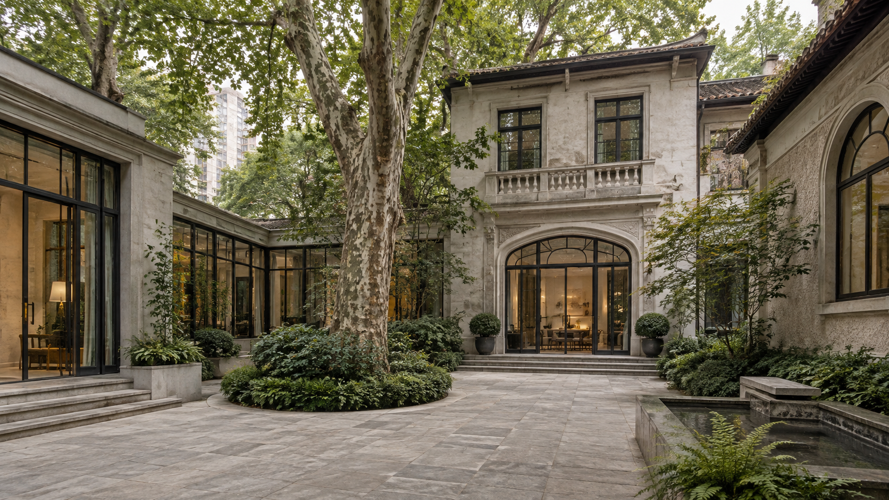
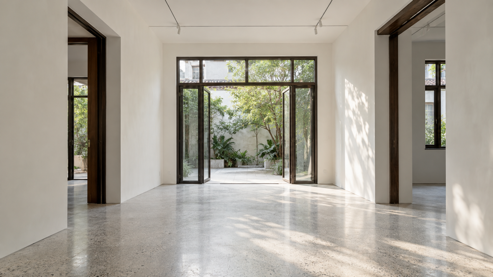

地图示意 · 位置非测绘
白庭 01
查看空间 ↗2026年11月 · 模拟档期
可用不可用待确认
参照地标不代表可租空间；所有档期均需人工确认。
AI 空间助手
模拟入口告诉我你的活动，我帮你梳理选址条件。
空间里的发生
概念素材
庭院，日光与绿树
空间 · 白庭01概念

室内展示的留白
空间 · 风格参考
器物发布的环形动线
案例 · 模拟方案，非现场
开放空间的布置可能
空间 · 风格参考
4条概念内容 · 照片统一4:3
此版仅演示点位、档期与需求流程。没有实时地图、联网AI或真实预订；空间与价格为模拟，图片非真实案例，不收集联系人。